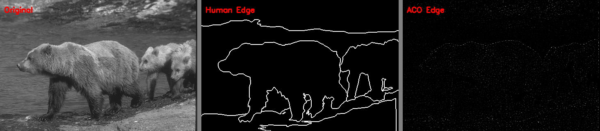
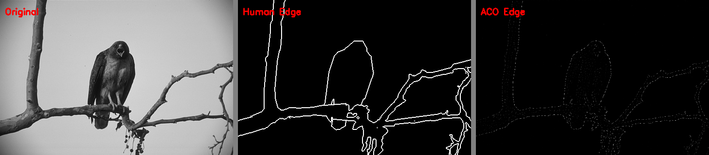

Ant Colony Optimization for Image Edge Detection
Evaluated on the Berkeley Segmentation Dataset (BSDS300)
Edge detection is a fundamental operation in image analysis — identifying boundaries where pixel intensity changes sharply. Traditional methods use fixed mathematical operators, but nature-inspired algorithms offer an adaptive alternative.
Fixed-kernel methods (Sobel, Canny) cannot adaptively respond to varying edge strengths and noise levels across an image.
Apply Ant Colony Optimization — a swarm intelligence metaheuristic — where artificial ants traverse the pixel grid and reinforce edge paths via pheromone.
Compare ACO-generated edge maps against human-annotated ground truth from the BSDS300 benchmark dataset (300 images).
Pioneered the use of ACO for image edge detection. Ants traverse a pixel grid using pheromone and gradient-based heuristics, with edges emerging from accumulated pheromone trails. Demonstrated competitive results against Sobel and Canny on standard benchmarks.
Extended ACO to MRF-based segmentation tasks, showing that pheromone-guided traversal can capture spatial context beyond local gradient information. Highlights the flexibility of ACO for broad image analysis tasks.
Comprehensive survey comparing ACO edge detection with classical methods. Analyzes parameter sensitivity (α, β, decay rate) and establishes that ACO produces smoother, more connected edge contours with fewer spurious detections.
Each ant at pixel (i,j) chooses its next position from the 8-connected neighborhood with probability:
Where ρ is the evaporation rate and Δτ accumulates gradient values deposited by visiting ants.
| τ(i,j) | Pheromone level at pixel (i,j) |
| η(i,j) | Heuristic value (Sobel gradient) |
| α | Pheromone influence weight |
| β | Heuristic influence weight |
| ρ | Evaporation decay rate |
AntColonyEdgeDetector class — core ACO algorithm implementation with configurable hyperparameters.
Batch processing pipeline — parses BSDS300 segmentations, runs ACO, generates dashboard visualizations.
| Parameter | Symbol | Default | Batch Value | Description |
|---|---|---|---|---|
| num_ants | K | 2,048 | 8,192 | Number of ants per iteration — higher = denser pheromone trails |
| num_iterations | T | 20 | 50 | ACO iterations — controls convergence quality |
| alpha | α | 1.0 | 1.0 | Pheromone influence weight — controls exploitation |
| beta | β | 2.0 | 2.0 | Gradient heuristic influence — controls exploration |
| decay_rate | ρ | 0.1 | 0.1 | Pheromone evaporation — prevents stagnation |
| steps_per_ant | S | 10 | 10 | Steps each ant walks per iteration |
Key insight: β > α favors gradient-guided exploration, producing edges aligned with true intensity transitions. The batch processing uses higher ant counts (8192) and more iterations (50) for production-quality edge maps.
Each dashboard: Original → Human Ground Truth → ACO Edge Map

BSDS300 #100075 — Bears at water's edge
BSDS300 #3096 — Military aircraft in flight

BSDS300 #42049 — Bird on branch
BSDS300 #135069 — Eagles in flight — high-contrast silhouette
| Property | Sobel | Canny | ACO (Ours) |
|---|---|---|---|
| Approach | Fixed 3×3 kernels | Multi-stage pipeline | Swarm intelligence |
| Adaptivity | None | Threshold-based | Pheromone-guided |
| Edge continuity | Low (pixel-wise) | Medium (hysteresis) | High (ant paths) |
| Noise handling | Poor | Good (Gaussian blur) | Good (collective avg.) |
| Speed | Very fast | Fast | Slow (iterative) |
| Parameters | Kernel size only | 2 thresholds + σ | α, β, ρ, K, T, S |
Key takeaway: ACO trades computational speed for adaptivity and edge continuity. It is best suited for applications where edge quality matters more than real-time performance — medical imaging, satellite imagery, precision inspection.
[1] Tian, J., Yu, W., & Xie, S. (2008). "An Ant Colony Optimization Algorithm for Image Edge Detection." IEEE Congress on Evolutionary Computation (CEC), pp. 751–756.
[2] Nezamabadi-pour, H., et al. "Ant Colonies for MRF-Based Image Segmentation." Journal of Applied Sciences.
[3] "Edge Detection Using Ant Colony Optimization." International Journal of Engineering Trends and Technology (IJETT), V71I9P233.
[4] Martin, D., Fowlkes, C., Tal, D., & Malik, J. (2001). "A Database of Human Segmented Natural Images and its Application to Evaluating Segmentation Algorithms and Measuring Ecological Statistics." ICCV.
[5] Dorigo, M. & Stützle, T. (2004). Ant Colony Optimization. MIT Press.
[6] Canny, J. (1986). "A Computational Approach to Edge Detection." IEEE TPAMI, 8(6), pp. 679–698.
Questions & Discussion